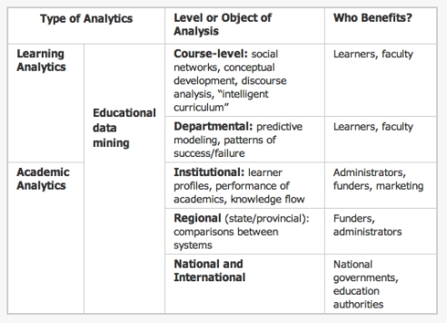
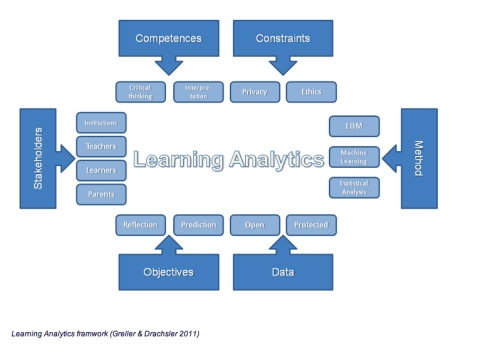

Other Publications and Online Resources
National Federation of Advanced Information Services
NFAIS has published Information Access and Usage Behavior in Today's Academic Environment
. Papers included:
- Information Discovery on Campus: Serving Today's Users from University of Minnesota, which argues that "Users draw little distinction between discovery and delivery; systems, data, and information objects should be optimised for fulfilment." This has implications for recommender systems.
- The Netflix Effect: When Software Suggests Students' Courses discusses work at Austin Peay State University using activity data to recommend courses to students based on their previous work, and claims better grades and fewer dropouts.
Learning & Knowledge Analytics
The Learning & Knowledge Analytics blog (http://www.learninganalytics.net/?page_id=2
) is
devoted to this growing area of interest to educators, administrators, and entrepreneurs. Starting
January 2011, this site proposed to serve as the starting point for an open course, offered to
support the Learning and Knowledge Analytics 2011 Conference
. The course is facilitated by
George Siemens (TEKRI, Athabasca University), Jon Drown (SCIS, Athabasca University), Dave
Cormier (University of Prince Edward Island), Tanya Elias (Athabasca University), and Sylvia Currie
(BCcampus).
For example, George Siemens’ post of 5-aug 2011 provides a useful framework for understanding
activity data in the broader educational business context, mapping the space that includes
‘educational data- mining’, ‘academic analytics’ and ‘learning
analytics’.
A Framework for Learning Analytics
Hendrik Drachsler and Wolfgang Greller of the Open University of the Netherlands (CELSTEC)
have submitted ‘Translating Learning into Numbers: Toward a Generic Framework for Learning
Analytics’ for publication in the Educational Technology and Society (JETS): Special Issue on
Learning Analytics (ed. George Siemens). See
http://www.slideshare.net/Drachsler/turning-learning-into-numbers-a-learning-analytics-framework
for further insights in to their framework.
